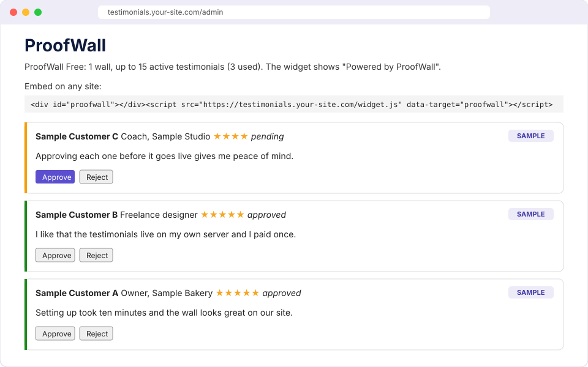
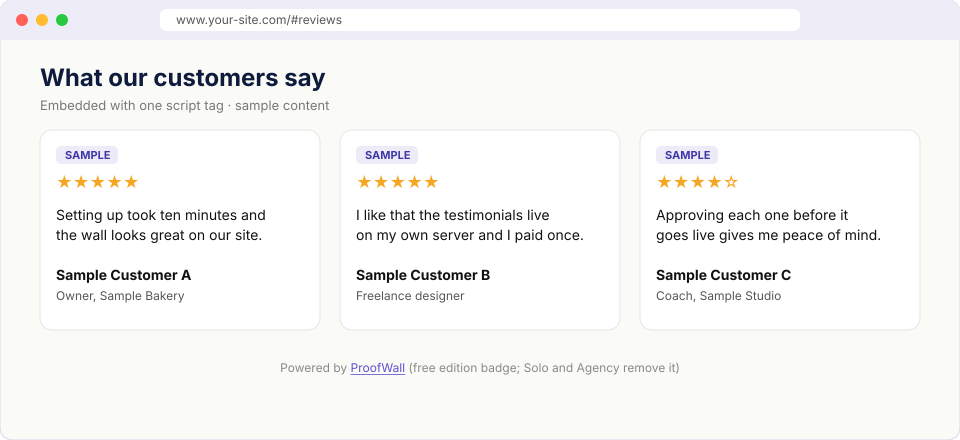

How to Self-Host a Testimonial Wall of Love (Step by Step)
Published Nov 4, 2026 · ProofWall team
Prices checked Nov 4, 2026 on senja.io/pricing and testimonial.to/pricing. Monthly list prices in USD. Vendors change their prices, so check their pages before you decide. ProofWall is our product, so read this as a vendor comparison, not an independent review.
A "Wall of Love" is just a page or widget that shows what customers say about you. You don't need a SaaS subscription for one. Here's how to run your own with ProofWall Free, which has zero npm dependencies and stores everything in one JSON file.
Why self-host?
- Ownership: the testimonials sit in a file on your server.
- Privacy: no third-party script collects data from your visitors, because the widget is served from your domain.
- Cost: the free edition costs nothing. Removing the limit and badge is a one-time $59.
The trade-off is that you look after a small server: updates, HTTPS, and backups. If you don't want to do that, a hosted tool like Senja or Testimonial.to is a reasonable choice.
Requirements
- Node.js 18+ or Docker
- A small VPS, or a host such as Render, Railway, or Fly.io
- HTTPS (Caddy, nginx, or your host's TLS)
1. Install and run
git clone https://github.com/rossclaw449/proofwall-free.git cd proofwall-free PW_ADMIN_PASSWORD=choose-a-long-password npm start
Or with Docker:
echo "PW_ADMIN_PASSWORD=choose-a-long-password" > .env docker compose up -d --build
The repo includes render.yaml, railway.json, and fly.toml. DEPLOY.md walks through each host. Whichever you use, attach a persistent volume at /data.
2. Collect
Send customers to https://your-host/. The form asks for a star rating, a few words, a name, and a role, and it includes a spam filter.
3. Approve
Open https://your-host/admin and log in with your password. New testimonials start out pending, and only the ones you approve go public.

4. Embed
<div id="proofwall"></div> <script src="https://your-host/widget.js" async></script>

Embedding on popular site builders
| WordPress | Add a Custom HTML block and paste the snippet. |
| Webflow | Drag in an Embed element and paste the snippet. |
| Framer | Insert an Embed component and choose HTML. |
| Ghost | Add an HTML card in the editor. |
| Squarespace | Add a Code block (some plans limit custom code, so check yours). |
5. Back up
Copy db.json (or the Docker volume) on a schedule. That file is the only state there is.
Stay honest
Only publish testimonials that real customers wrote, and don't edit what they said. In the US, the FTC's rule on consumer reviews and testimonials bans fake reviews and testimonials. See the FTC Q&A.
FAQ
Can I self-host a testimonial wall for free?
Yes. ProofWall Free is self-hosted with 1 wall and up to 15 active testimonials, and the widget shows a small Powered by ProofWall badge.
Where are the testimonials stored?
In a single JSON file on your server (by default /data/db.json in Docker).
Does the widget slow my site down?
It is one small script served from your own host. It fetches approved testimonials and renders plain HTML cards.